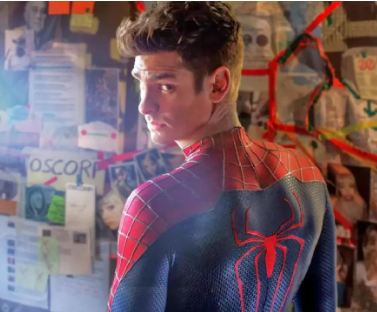

Spiderman <3
Tobey Maguire

Tobias Vincent Maguire (Santa Mónica, California; 27 de junio de 1975) es un actor y productor de cine estadounidense, conocido principalmente por interpretar a Peter Parker en la trilogía de Spider-Man de Sam Raimi (2002-2007), papel que retomó en 2021 en Spider-Man: No Way Home.
Andrew Garflied

Andrew Russell Garfield es un actor y productor británicoestadounidense. Ha recibido varios galardones, incluido un Premio Tony, un Premio BAFTA y un Globo de Oro. Time incluyó a Garfield en su lista de las 100 personas más influyentes del mundo en 2022.
img3
Holland lograría mayor reconocimiento tras ser seleccionado para interpretar al personaje de Spider-Man en el Universo cinematográfico de Marvel, donde protagonizó las películas Spider-Man: Homecoming (2017), Spider-Man: Lejos de casa (2019) y Spider-Man: No Way Home (2021)